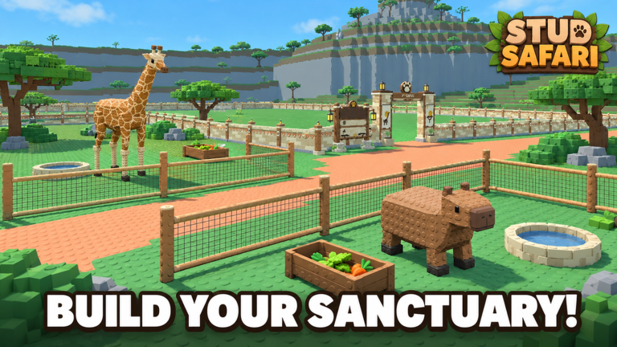

System design
Gameplay responsibilities are separated into focused components.
Software Engineering · Game Systems
Build your own wildlife sanctuary. Rescue animals, design their enclosures, and care for your collection as the weather changes.
01
Stud Safari is a live Roblox zoo-management game published by Wildtrail Productions.
Players build habitats, rescue animals, and collect variants and mutations. Animal care affects value, and weather and daily rewards give players reasons to return to their sanctuary.
02
03
Gameplay responsibilities are separated into focused components.
Actions update the world, economy and progression state.
Playable on Roblox and in active development.
04
Client controllers handle input, placement previews, and interface updates. Server services validate placement and purchases, manage animal and sanctuary state, and persist player progress. Shared Luau modules hold definitions and grid rules used by both sides.
05

06
Keeping world, player and interface state synchronised as actions occur.
Separating responsibilities without fragmenting simple gameplay logic unnecessarily.
Managing connections and updates so repeated interactions remain predictable.
Balancing technical structure with frequent gameplay changes.
07
08
Visit the official Roblox experience page to play and see the latest game updates.
Play on Roblox